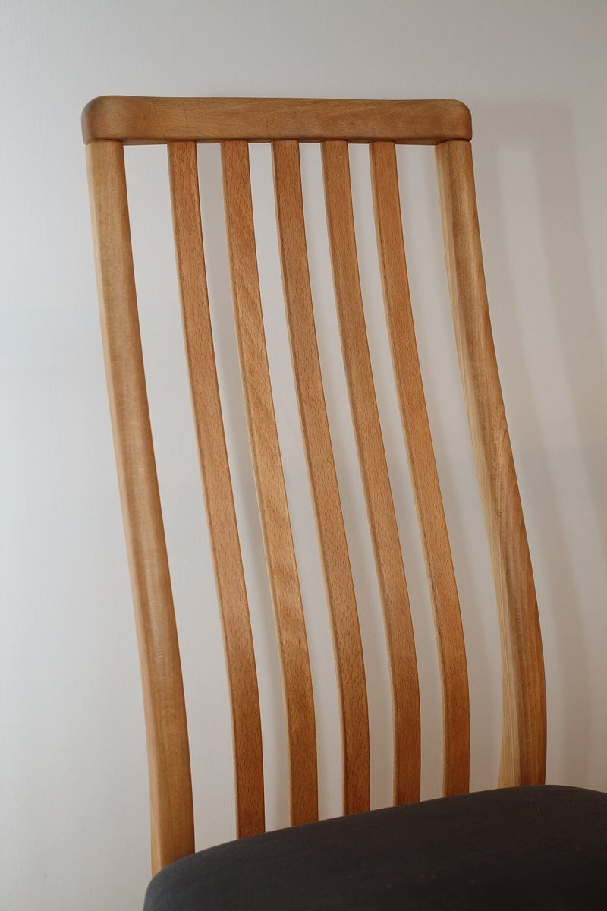

店のこと
店のこと
お店について確認できているのは、所在地とInstagramのアカウントだけです。
確認できていること
- 店名は「Hosi bosi coffee」、業種はカフェ
- 所在地は石川県輪島市河井町4-168-1(〒928-0001)
- 電話番号はなし。連絡はInstagramから
- 営業時間・定休日・メニュー・価格・ご予約・駐車場は準備中
 図版 05
図版 05想像してみる
星の数ほど、の一杯を
このページの「想像してみる」部分は、制作側が想像して書いたものです。お店の実際の様子・考え・メニューとは関係がありません。
由来は分かりません。制作側は、屋号の綴りから夜空の星を連想しました。たとえば、窓辺に飲み物を置いて、ぼんやり外を眺める時間。星座を結ぶように、ひとつずつ好きな時間が増えていく。そんな過ごし方を思い浮かべています(実際のお店の姿ではありません)。
 図版 06
図版 06 図版 07
図版 07
図版 08